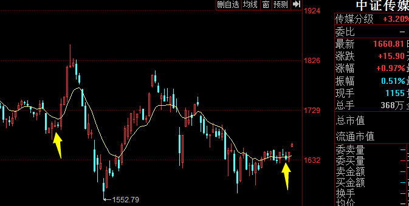

如果这样，分级b，尤其是深成b要死人了//@时光精致:分级的玩法消失。。。@财联社APP:【基金公司人士：监管要求6月30日之前分级基金要转型成指数基金】财联社5月21日讯，从多家基金公司获悉，关于分级基金有了进一步的窗口指导，其中关键的一点就是分级的存续期可能不会等到2020年底了。有基金公司人士表示，"最近确实接到了通知，要求在6月30日之前分级基金要转型，转型成指数基金。"（每经）
回复@大叔爱吃素:500不一定狂奔。它能保证跟上牛市的涨幅，这已经非常难能可贵。牛市中至少有一半股票涨幅跟不上指数。军工和信息狂奔的概率非常大。//@大叔爱吃素:请问E大，牛市狂奔的品种，除了证券，创业板，中证500外，还有其他的么？@ETF拯救世界:怀疑人生了 
回复@年轻的真的:未来赚钱的格局中，一定是宽基赚钱最多，因为配置的最多。涨幅不一定是最大，但主力一定是宽基。其它的角色不一样。有医药这样在弱市中挣分的，也有在牛市中狂奔的。可以说非常舒服。//@年轻的真的:懂e大的意思了，500肯定是未来e家军赚钱的一支劲旅！@ETF拯救世界:怀疑人生了
回复@不可思议的暖:月初错过一次买入机会。不过下一波热点大概率不是它。//@不可思议的暖:e大消费指数还没到开始可以开始买入的位置吗？//@ETF拯救世界:回复@羊样佯徉烊蛘珜垟眻:我不敢奶。我还是挺希望它涨的。因为给它的仓位已经配置的差不多了，基本不会再买太多了。ps，你这个头像怎么回事。@ETF拯救世界:$中证传媒 sz399971$ 人家中石油带着上证涨你来什么劲……
回复@羊样佯徉烊蛘珜垟眻:我不敢奶。我还是挺希望它涨的。因为给它的仓位已经配置的差不多了，基本不会再买太多了。ps，你这个头像怎么回事。//@羊样佯徉烊蛘珜垟眻:今天环保要飞车……@ETF拯救世界:$中证传媒 sz399971$ 人家中石油带着上证涨你来什么劲……